Before the terminoligy UX design even was established, it has always been in symbios with new teqchnoligy, forcing new ways for users to interact with it. Sometimes we just need to stop, look back and reflect on what progress we have made. I have colleted a number of classic old interfaces that i have had the experience to use, and funny enough, tought was incredible at the time!
In the future, I want to be a fulltime writer. Substack enable subscribers to support me through a subscription model.
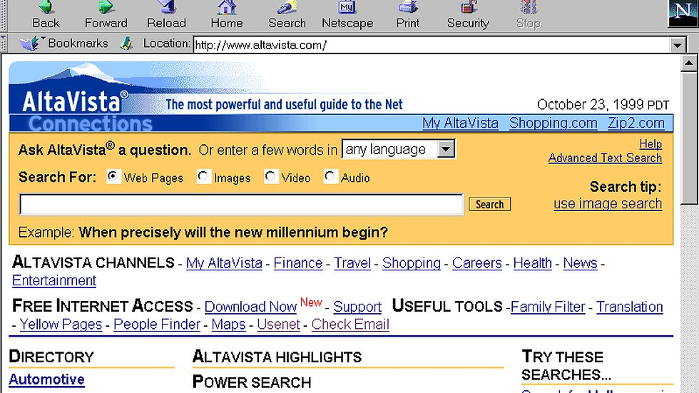Ahh, AltaVista + Netscape, the best search motor and brawser back in 1999, and i can see why. There is so many choises to chose from in one neat window… Notice the wording “Location” for the website. Just somthing i found intersting.
 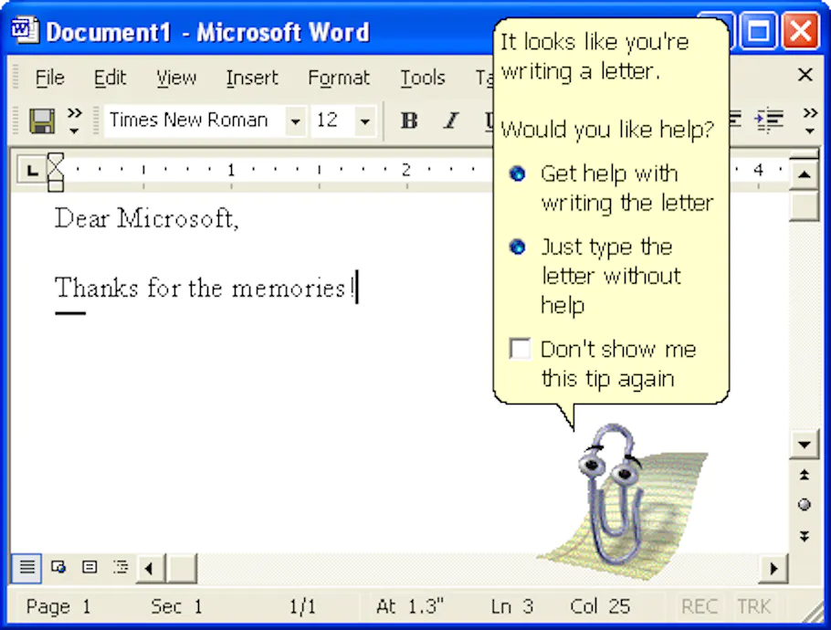
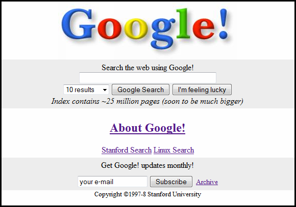
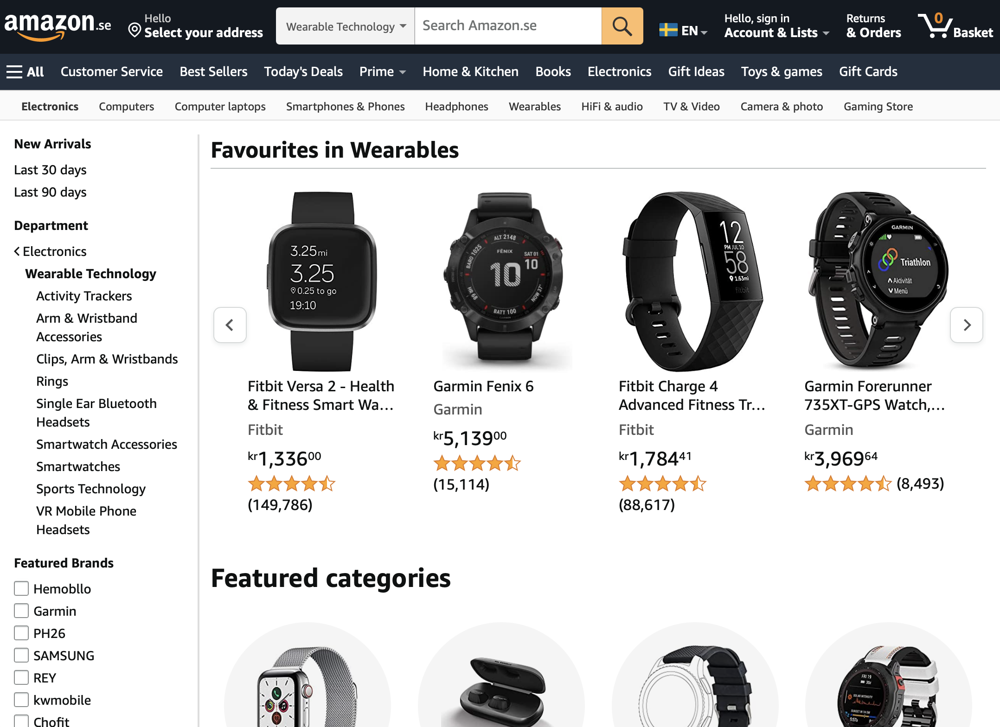
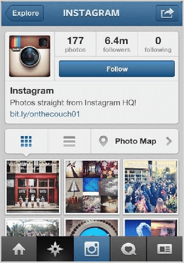
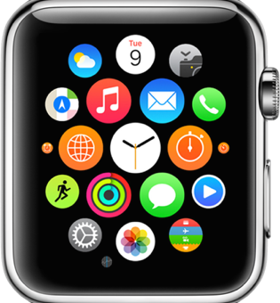
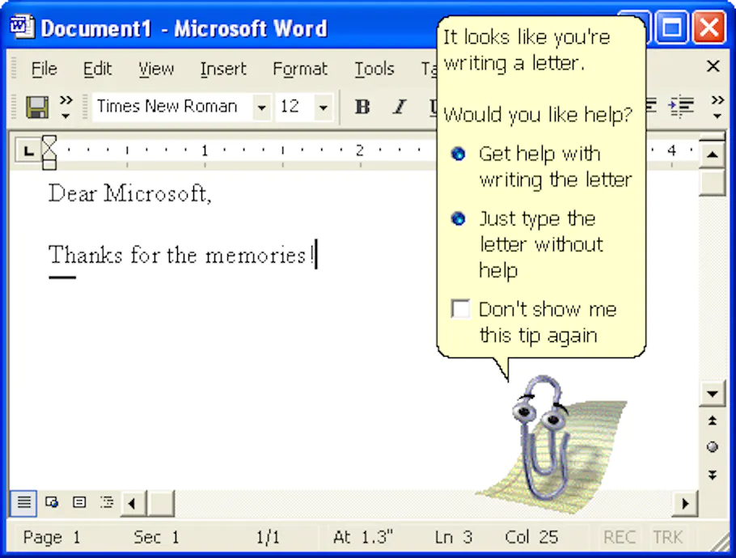
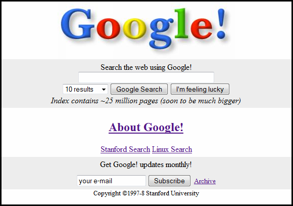
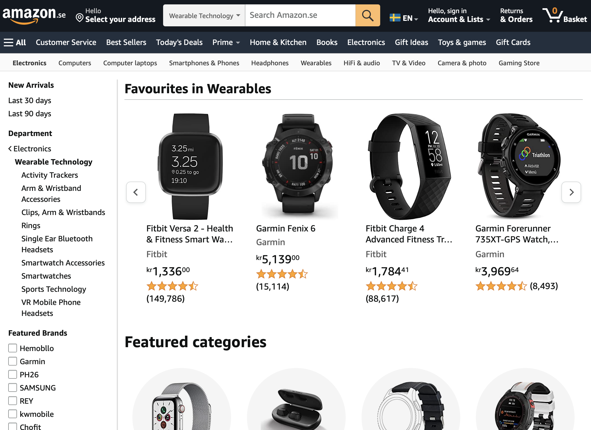
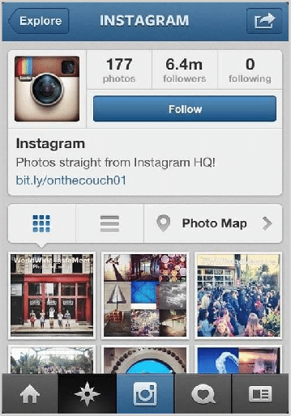
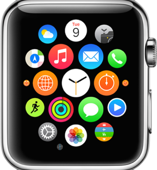